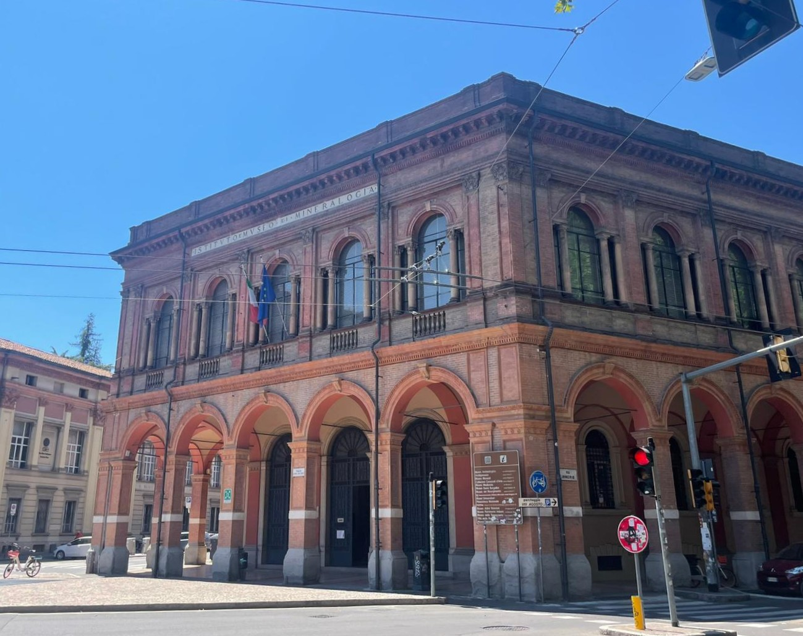
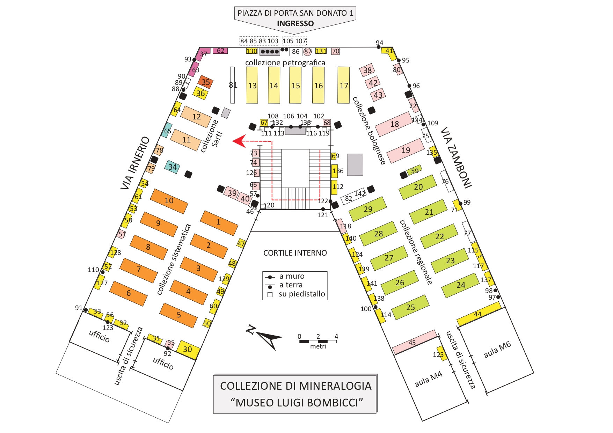

We chose the Luigi Bombicci Museum, is part of the University of Bologna's museum network (SMA), which includes 15 museums showcasing diverse cultural and scientific heritage since 1088.
What you can see:
A special fluorescent minerals booth, where visitors can enjoy glowing minerals in a dark environment.
The Mineralogical Collection "Luigi Bombicci Museum"

About the founder Luigi Bombicci:
The Luigi Bombicci Mineralogical Museum is located in the historic center of Bologna, at Piazza di Porta San Donato. It occupies the first floor of the University of Bologna’s Department of Earth Sciences building.

Exhibition space: 850 m²
The layout is divided into several main areas (see the map/image):
Orange area: Main systematic mineralogical collection featuring minerals from around the world.
Green area: Minerals sourced from various regions of Italy.
Pink area: Minerals specifically from Bologna.
Top area: Petrological samples (rock specimens).
Additional smaller display cases scattered throughout show a variety of minerals of different types and sizes
After conducting an on-site visit and observing the museum environment, we identified three institutional goals for our project:


Considering also the institutional goals, we set the cognitive goals with these features:


We have identified the exhibits of the collections itself as assets of the museum, as they are rich in both quantity and quality.
Our project primarily targets:
We define this group as a “light-interest” segment—a reachable audience with whom the museum can begin to build meaningful and lasting engagement
As personas, we have set three potential visitor profiles
Giulia: a curious student (age 17)
A 17 year old high school student from Bologna.Thomas: a businessman who used to have passion in minerals (age 38)
His usual days were packed with deadlines.Lucia: a retired cultural enthusiast (age 67)
A retired librarian and longtime Bologna resident.
We have identified the motivations, barriers, capabilities of our targeted visitors as below.
The Luigi Bombicci Museum, despite its rich mineralogical collection, central location in Bologna, and free admission, currently faces several challenges:
Low public recognition: While the museum has a high Google rating (4.8 stars), the small number of reviews suggests limited public awareness and engagement.
Few available resources: There is a lack of materials, both physical and digital that support or explain the museum. Pamphlets are limited, and digital resources such as maps or catalogs are often only in Italian, reducing accessibility for non-Italian speakers.
Lack of an initial “hook”: There are few opportunities for first contact or relatable entry points, making the museum feel overly academic or distant, even for those who may have a casual interest.
To address these issues, our project introduces an interactive, storytelling-based experience inside the exhibition space. The goal is to encourage visitors to engage with minerals not only as scientific specimens but also as personally meaningful and culturally rich objects. Using a touchscreen interface, visitors participate in short activities connected to the physical displays. Their responses are saved on a personalized memory card given at the entrance, and at the end of the visit, they receive a takeaway item that turns their experience into a lasting memory. Through this approach, the museum becomes more approachable, relatable, and engaging for a broader audience
This project adopts an audience-centered approach, emphasizing active participation and engagement. It is designed as a phygital experience, blending physical presence in the museum with digital interaction. The focus remains on the in-person visit, digital elements are used to enrich the exhibition, not to replace it. The goal is to deepen emotional connection and memory of the museum experience.
The core concept is to build a personal connection between visitors and minerals, encouraging reflection on the human-nature relationship. The experience includes three core interactive activities.
Personality Test Visitors enter their name and answer simple questions to be matched with a mineral. This fun and light activity serves as an engaging entry point, sparking curiosity.
Story and Quiz Visitors discover the background of their matched mineral through a narrative format, enriched with scientific, historical, and cultural context. Quizzes make learning casual and enjoyable.
Photo Booth A visual reflection at the end of the experience. Visitors create and take home a personalized photo combining their image with their chosen mineral, leaving with both knowledge and a memorable souvenir.
The installation should be entirely accessible and usable without asking users to download an app or even use their own devices; any interaction may be only through touch screen kiosks that are museum-owned.
Use scannable QR badges (no app download) for customized experiences and souvenir access.
Material should be offered in Italian and English to serve both local and foreign visitors.
The experience should have value added to the underlying assets (the mineral collections) and not detract from the physical exhibits, strengthening a narrative approach that increases enchantment and comprehension.
The system should be easy to use and accessible to visitors with little digital literacy, for example, children and older adults
The experience should offer customized experiences that connect visitors' interests to a specific mineral or topic.
The experience needs to include a take-home element (e.g., a customized card or certificate) to reinforce memory and sharing.
The experience should make sharing easy, amplifying the museum's reach.
The system should be simple to update by museum staff for keeping the experience up-to-date and current.
Visual and sensory interaction must be part of the installation, such as interactive quizzes, fun facts, and photo booths.
The installation can be provided with voice instructions for greater accessibility, especially for visually challenged visitors.
It may be able to be extended to support other languages than Italian and English for more international scope.
The system could include gamified elements like scavenger hunts, achievement badges to attract kids and families even more.
The installation could collect anonymous usage statistics (with clear permission) to inform future development and measure engagement.
Features that will not be included in the current project scope:
There will be no requirement for users to log in or register to use the installation and thus the museum will not process or store any personally identifiable information.
This is the overview experience from the visitor's perspective. The workflow phases of onboarding, exploration, engagement and closure can be mapped and summarized as follows:
Crystal Journey (first part) – Visitors discover where their mineral is created, learn about its historic and cultural uses.
Crystal Journey (second part) – Visitors engage in a quiz "Two Truths and a Lie" to test their previously acquired knowledge.
Reflection Core – With a camera installed kiosk they see a reflection themselves merged with the mineral. They can take capture themselves in photos that are downloadable.
Souvenir Collection – At the end, they receive a certificate as a keepsake for the memory of their visit.
The installation follows a narrative-style tone of voice, meaning the messages speak to the visitor as if telling a story or inviting them into one. Rather than providing dry instructions, the kiosk experience talks directly to the visitor in an engaging, story-like manner. For example, the opening message might say:
“Welcome, Seeker. Today, you’ll uncover which mineral mirrors your spirit—and unlock the hidden stories held deep within the Earth.”
This narrative approach encourages emotional engagement and curiosity, helping visitors feel personally involved. The core narrative arc of the experience is: “You are a Stone Seeker. Today, you’ll discover which mineral resonates with your personality and unlock hidden stories behind the stones.”
Visitors embark on a branching journey that blends factual mineralogical knowledge with imaginative storytelling. Each decision shapes a path through the mineral exhibit, promoting personalized discovery and active participation.
The experience will require a variety of software and hardware, including:
Hardware:
Touchscreen kiosks for onboarding and exploration
R-enabled camera stations for immersive mineral visualizations.
Photo printers for personalized mineral cards.
Software:
An operating system (such as Windows, Android, or Linux) for the foundational environment, configured in kiosk mode
Develop the main application functions and interface design using HTML, JavaScript, applying content management systems for interactive display.
Use Blender for applying high resolution 3D images
Security tools, and remote controls can be added for updates or fixes
Comprehensive mineral database including text, images, and metadata.
High-quality 3D models of selected minerals.
Audio and text-based narratives available in Italian and English.
To ensure sustainability, resilience, and continuous enhancement of the visitor experience, further development and regular maintenace procedures would be required
Content Updates: Modular content structure allows museum staff to easily add or modify quizzes, mineral profiles, and stories without advanced technical skills.
Technical Support: Scheduled maintenance ensures hardware and software stability; clear troubleshooting protocols empower on-site staff.
User Feedback: Integrated feedback tools collect visitor impressions and suggestions; optional anonymous analytics (with consent) track engagement to inform iterative improvements.
Analog Backup: Printed maps and quiz cards provide a fallback to maintain experience continuity during technical outages.
In order to complement the mineral collection, and not to over power it with other activities. The kiosk installations help in transforming the museum environment into an interactive one. The experience becomes dynamic, memorable and personally meaningful.
Active engagement rather than passive viewing- The installation transforms the museum experience into active engagement with the mineral collection through digital stories, quizzes, and personality tests.
Seamless digital-physical integration- Interactive kiosks complement and support the physical exhibits without overwhelming them, creating a seamless visitor journey that integrates digital and physical elements cohesively.
To solve the issue of losing engagement from visitors some loyalty building initiatives could be implemented that helps the visitor to remember the visit. Currently the implemented solution includes - Customized take-home documents (“Stone Seeker” cards) with inspirational messages such as “Just like minerals, you evolve” build emotional connections and encourage repeat visits.
Other possible actions that could help in increasing the user engagement are-
Tiered recognition and rewards- Tiered badges or certificates for returning visitors foster a sense of belonging and ongoing engagement with the museum.
Loyalty codes- Unique loyalty codes on smart cards motivate repeat visits and the discovery of new mineral identities, deepening visitor involvement over time.
Resilience and sustainability are central to a system's design. And certain solutions have been implemented to reduce the technical barrier and ensure operational reliability even in events of technical outages.
Low-maintenance design- The system is designed to be easily updated by museum staff without reliance on visitor devices or continuous internet access, reducing technical barriers.
Analog fallback- Printed maps, quizzes, and kits serve as resilient alternatives to maintain engagement in case of technical issues or outages, ensuring uninterrupted access to the experience.
Energy-efficient hardware- Low-power devices and green technologies could be used to promote environmental responsibility and operational reliability.
Accessibility is fundamental to increase the outreach of any museum and since this museum is not accessible to people who don't understand Italian so in order to make it accessible to a wider population and all age groups while maintaining a simple user interface which is intuitive and does not require any assistance to move through. The steps implemented are
Barrier-free interaction: All interactive content is provided via museum kiosks, removing the need for personal devices or app downloads and ensuring accessibility regardless of visitors’ digital literacy or device ownership.
Enhanced accessibility features: Optional voice assistance and tactile models support visitors with visual or motor impairments, broadening inclusion.
Multilingual accessibility: Multilingual audio commentary and subtitles can help bridge language gaps and make the experience welcoming to a wider audience.